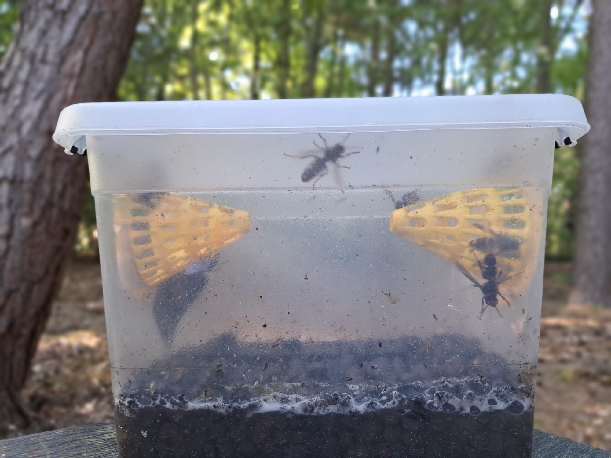

De Aziatische hoornaar vormt een toenemende bedreiging voor bijenvolken. Nordic Beehive biedt praktische, maatwerk oplossingen om uw bijenstand doeltreffend te beschermen, afgestemd op uw specifieke situatie en opstelling.
Onze oplossingen zijn snel en eenvoudig te plaatsen en direct effectief.
Al onze hoornaaroplossingen zijn erop gericht om bijvangst te minimaliseren. Ze zijn ontworpen om hoornaars effectief te vangen zonder andere nuttige insecten onnodig te schaden.
De oplossingen werken samen en zijn compatibel met bestaande opstellingen voor maximale bescherming.
Ontwikkeld vanuit eigen ervaring als imker, met begrip voor de reële noden op het veld.
Efficiënte basisbescherming op maat
De Koldo Belasko is een mechanische val die specifiek ontwikkeld werd om de druk van de Aziatische hoornaar rond de bijenstand te verlagen. De werking is gebaseerd op een trechterprincipe waarbij hoornaars worden aangetrokken en binnengeleid, maar nadien niet meer kunnen ontsnappen.
De Belasko wordt voor de bijenkasten gepositioneerd, waardoor de jachtdruk aan de vliegopening direct vermindert. Dit zorgt voor rust aan de vliegopening en laat de bijen opnieuw normaal uitvliegen.
Efficiëntie hangt sterk samen met correcte plaatsing en dimensionering. Daarom wordt elke Belasko op maat gemaakt volgens uw opstelling. Materiaalkeuze in inox of gegalvaniseerd staal zorgt voor duurzaamheid en lange levensduur in buitenomstandigheden.
Voor plaatsingen in windgevoelige zones is een verzwaarde voet beschikbaar. Door de kolommen te voorzien van extra massa wordt het risico op omvallen bij stormweer sterk verminderd, zonder aanpassingen aan de bijenkasten zelf.
Actieve bescherming aan de kast
De elektrische harp vormt een actieve verdedigingslijn vlak voor de bijenkast. Ze bestaat uit een frame met parallelle draden onder lage spanning.
Wanneer een hoornaar door de harp vliegt, maakt hij contact met twee draden en wordt hij kortstondig geëlektrocuteerd. Dit leidt tot uitschakeling of verzwakking, waardoor hij niet langer actief kan jagen op bijen. Voor de bijen zelf is de harp volledig veilig, zij zijn klein genoeg om zonder contact door te vliegen.
De harp werkt vooral effectief tijdens periodes van hoge druk, wanneer hoornaars actief voor de kast hangen. Het is aan te raden de harp af en toe te verplaatsen, zodat hoornaars er niet aan gewend raken.
Natuurlijke ondersteuning en ecologische meerwaarde
Koolmezen zijn insecteneters die hun jongen voeden met duizenden insecten per seizoen. In de omgeving van een bijenstand helpen ze zo mee om de algemene insectendruk te verlagen, een volledig natuurlijke bijdrage aan uw bijenstand.
Koolmezen in de tuin zijn ook gewoon een plezier om te zien: levendige, nieuwsgierige vogels die het jaar rond aanwezig zijn. Een mezenkastje plaatsen is een van de eenvoudigste manieren om actief bij te dragen aan een rijkere tuin en een gezonder ecosysteem.
Hoewel ze geen gerichte oplossing vormen tegen de Aziatische hoornaar, dragen ze bij aan een natuurlijk evenwicht rond de bijenstand. In combinatie met andere maatregelen versterken ze het geheel.
De mezenkastjes worden uitgevoerd in dezelfde Zweedse kleuren als de bijenkasten, zodat ze visueel één geheel vormen in uw tuin of bijenstand.
Verspreide vangst in de tuin
De selectieve val is een passieve vangstoplossing die niet voor de bijenkast maar verspreid in de tuin geplaatst wordt. Ze trekt Aziatische hoornaars aan en houdt ze vast, waardoor de algemene populatiedruk in de directe omgeving van uw bijenstand daalt.
Wat de selectieve val onderscheidt van commerciële vallen, is de aandacht voor andere insecten. Door het gebruik van geëxpandeerde kleikorrels in de val wordt vermeden dat andere insecten, zoals wespen, vliegen of zweefvliegen, rechtstreeks verdrinken in de lokvloeistof. Ze kunnen op de korrels landen en de val verlaten, terwijl hoornaars door hun gewicht en gedrag gevangen blijven.
De val is verkrijgbaar in twee uitvoeringen. De versie met rooster & trechter combineert een plat instaprooster met één conische trechter: andere insecten vinden via het rooster nog makkelijker de weg naar buiten, zodat bijvangst zo goed als onbestaande is. De versie met 2 trechters heeft aan beide zijden een conische fuik en zet maximale vangstdruk op hoornaars.
De lokvloeistof speelt een cruciale rol in de efficiëntie van de val. Een goed afgestelde vloeistof trekt selectief Aziatische hoornaars aan, zonder massaal andere nuttige insecten te lokken.
De vallen kunnen vrij geplaatst worden in de tuin, aan bomen of op staken, op plaatsen waar hoornaars actief worden waargenomen. Meerdere vallen versterken het effect, zeker in tuinen of bijenstanden met een hogere hoornaardruk.

Combineer uw bijenkast met de juiste bescherming, of neem contact op voor advies op maat.